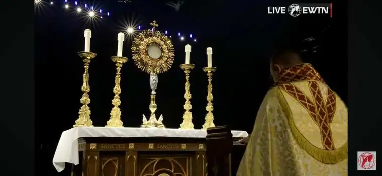
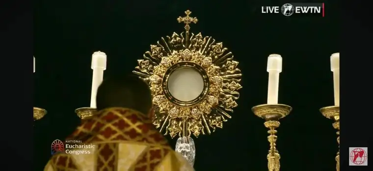
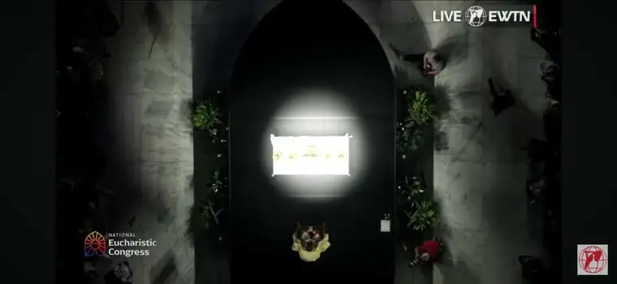
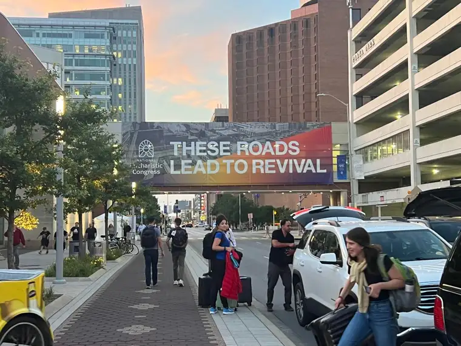
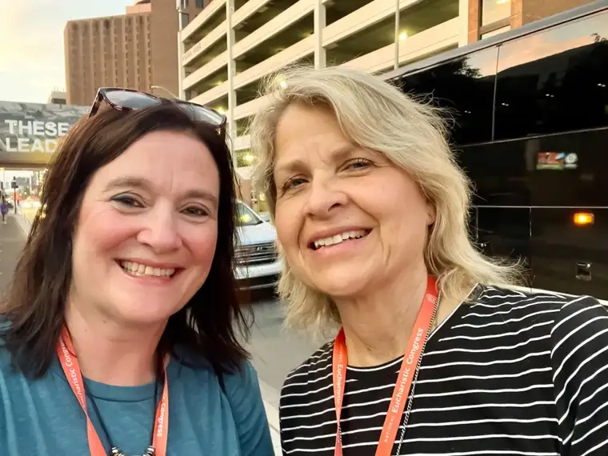
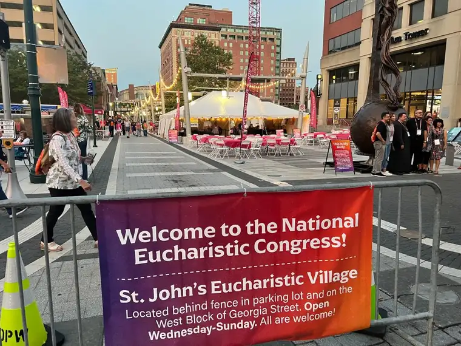
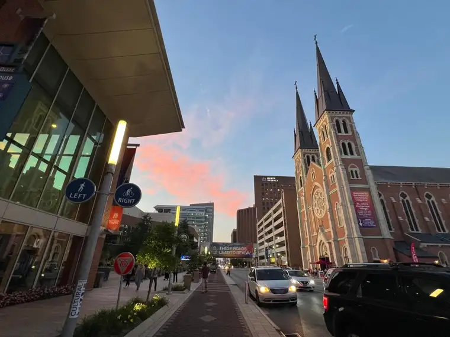
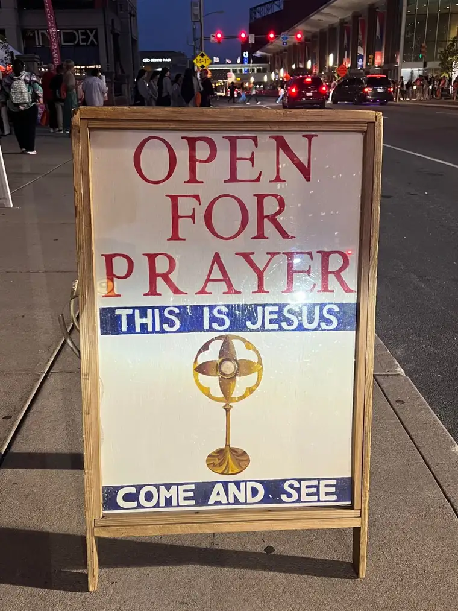
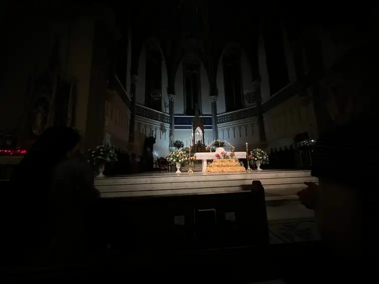
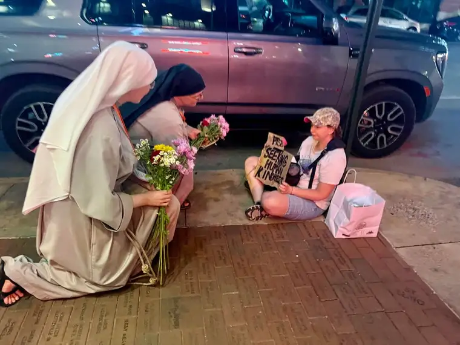

[To start from the beginning, here are Days 1 and 2-A]
As the road stretched on, our hopes of reaching Indianapolis by the 7 p.m. start time diminished. Our phone navigators showed we would arrive in the city at 7:52 p.m., nearly an hour later. And then we still had to drag our luggage out of the bus, find our credentials to get into the Lucas Oil Stadium, and find our way there. The chances of seeing any of it were quite slim.
But at 7 p.m., we began to hear sounds from our the seats of our bus mates; sounds that told us they’d figured out what we had: that we could watch the opening on our smartphones. And so that is what many of us did. Despite our disappointment at not being there for the grand welcome in person, seeing the Eucharist so close was actually pretty thrilling. We knew we’d be there soon–in fact, we were on our way that very moment. By morning, we’d be joining the others. For now, we could join in on the excitement from the comfort of our bus, missing the long lines and possible crowdedness of 50,000 plus people suddenly converging in that space for the first time. Later, some fellow pilgrims admitted it was hard to really see anything from their vantage point, once they did make it in. There were some issues with registration and confusion. We missed all that. Instead, we gazed upon the Eucharist, Jesus!, from our bus seats, experiencing the growing excitement as we inched toward our destination.
The following photos are screenshots I took from my phone as it was unfolding. The last one is especially mesmerizing, because it’s taken from on high, looking straight down; a vantage point we never could have seen otherwise. What an incredible perspective, as if looking down at Jesus from heaven!



Finally, at exactly 7:52, we entered the city gates. We had arrived! Things went pretty quickly with the drop-off, luggage lugging, and finding our credentials–nametags, programs, guides, etc. Some of our fellow pilgrims decided to head straight to the stadium and see if they could catch the end. But Joanne and I took our time. I opted for a warm shower. Once we were cleaned up and feeling better, however, we decided to make our way out in into the city to find our way around, so that the morning would go more smoothly.



The weather that week was amazing, and this night was no different. It was beautiful, and we were so happy to finally be in Indianapolis, at the start of what would be an amazing week. Signs of the big event were everywhere! The city had obviously been preparing for us for a long time. It was heartwarming to feel so welcomed. We decided to start looking for food, since we had not had a full dinner, only snacks we’d brought on the bus.

But first, we found the big stadium. It was walking distance from our hotel. As we headed back toward the hotel to find an eatery, a church–St. John’s, we’d soon learn–greeted us.
As we got closer, this sign stopped us from moving past the church. “Let’s just take a peek,” I said.

There were already a fair amount of people in the pews in the darkened sanctuary. The only thing lit was the monstrance on the altar. We were captivated. Despite thinking we’d just duck in and out, Joanne and I were compelled to move inside, and soon, we found ourselves sitting toward the front, gazing upon our Lord.

It was so incredibly peaceful. And to add to that feeling, above and behind us in the loft, a small group of religious–nuns and brothers–were playing beautiful music that calmed our weary souls. It had been quite an adventure, with little sleep and a bit of uncertainty throughout much of the day. Even though feeling secure along the way, it was nice to exhale.
Before long, people began to walk up to the altar with flowers, placing them in vases at the base. We soon learned religious sisters at the back were passing these out, and we joined the line to have a chance to bring something beautiful to Jesus, too. It was a moving half-hour or more of refreshment and feeling the presence of God. And it seemed like such a gift, so unexpected and beautiful as it was, a sign that God had called us there for a purpose and was refreshing us now for the days ahead.
On the way out of the church, the moment that stayed with me the rest of our time in Indy presented itself. This was the first of many such moments we’d witnessed moving from session to session, or two a meal. The Catholics had taken over the city center of Indianapolis, whether the people wanted us there or not. And they were on fire for the Lord, ready to share his love with others in whatever way possible!

In the morning, we would hear the opening talk, given by our very own fellow North Dakotan, Monsignor James Shea, president of the University of Mary. I can’t wait to share my impressions tomorrow!